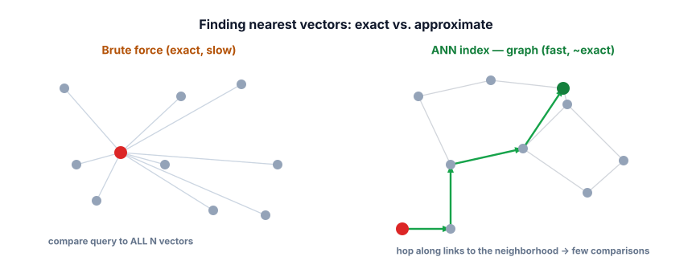

Vector databases & indexes
Brute-force cosine over a NumPy array is perfect — until you have a million chunks and need answers in 20 milliseconds. Vector databases make retrieval fast, filterable, and durable. Here’s what they actually do, and the one trade-off you must understand.
Why a special database
Computing cosine against every stored vector is O(N) — fine for thousands, hopeless for millions (every query would compare against all of them). A vector database solves this with three things a NumPy array can’t give you: a clever index that finds nearest neighbors without checking every vector, metadata filtering (only search documents this user is allowed to see, from this date range), and the boring-but-vital persistence, updates, and deletes you need in production.
A vector database stores records of (id, vector, metadata, text) and supports fast nearest-neighbor search over the vectors. Because exact nearest-neighbor is slow at scale, vector DBs use approximate nearest neighbor (ANN) indexes — data structures that find almost the closest vectors while checking only a small fraction of them. The trade you control: a little accuracy (recall) for a lot of speed.
Brute-force search is looking for your friend in a stadium by checking every seat. An ANN index is asking the ushers: they know roughly which section your friend's group sits in, so you check two or three sections and usually find them in a minute. Metadata filters are the ticket check: some sections you are simply not allowed into. The analogy breaks because ushers who are wrong say so; an ANN index that misses the best match gives no warning, which is why you measure recall.

What’s stored, and why metadata matters
| Field | Example | Used for |
|---|---|---|
id | "manual#chunk_12" | Identity, updates, deletes, citations |
vector | [0.02, -0.41, …] | Similarity search |
metadata | {source, date, user_id, section} | Filtering — permissions, recency, scoping |
text | the chunk itself | Putting into the prompt + citing |
Metadata filtering is not a nice-to-have. It’s how you enforce that user A never retrieves user B’s documents, how you prefer recent data, and how you scope a search to one product. A vector match that ignores permissions is a security incident waiting to happen.
The index family (intuition)
You’ll meet a few index types; you don’t need the math, just the shape:
- Flat / brute force — check everything. Exact, simple, fine up to ~tens of thousands of vectors.
- HNSW (the popular default) — builds a multi-layer graph of links between vectors; search “navigates” the graph toward the query. Fast and accurate; tune the
efparameter to trade recall for speed. - IVF — clusters vectors into buckets; search only the few nearest buckets (
nprobeof them). Memory-efficient for huge corpora.
Chroma is a free, open-source vector DB that runs locally and even embeds text for you. Note the metadata and the filtered query.
!pip install chromadb
import chromadb
client = chromadb.Client()
col = client.create_collection("docs") # uses a free built-in embedder
col.add(
ids=["c0", "c1", "c2"],
documents=[
"Returns are free within 30 days.",
"The X200 has a 3-year warranty.",
"Cancel your plan under Settings > Billing.",
],
metadatas=[
{"source": "returns", "product": "X200"},
{"source": "warranty", "product": "X200"},
{"source": "billing", "product": "account"},
],
)
res = col.query(
query_texts=["how long is the guarantee?"],
n_results=2,
where={"product": "X200"}, # metadata filter — only X200 docs
)
print(res["documents"][0]) # -> ["The X200 has a 3-year warranty.", ...]The filter means even if an account-billing chunk were similar, it could never be returned for an X200 query — that’s your permission/scoping boundary, enforced at search time. Swap Chroma for FAISS, Qdrant, Weaviate, or Postgres’s pgvector later; the concepts are identical.
Assumptions: 50 M chunks, 768-dimension float32 embeddings, 200 queries per second, 3,000 tenants, a latency target of p95 under 50 ms.
- Raw size. 768 x 4 bytes = 3,072 bytes per vector. 50 M x 3,072 = 153.6 GB. That does not fit in a 64 GB server's RAM, so either shard or compress.
- Brute force cost. One query compares against all 50 M vectors: 50 M x 768 = 38.4 billion multiply-adds per query. At 200 QPS that is 7.7 trillion per second, far past one machine. Flat search is out.
- IVF sizing. The FAISS index guidelines suggest about 262,144 (218) clusters for 10 M-100 M vectors. Average list length = 50 M / 262,144 = about 191 vectors. With nprobe = 64 you scan 64 x 191 = about 12,200 vectors per query, roughly 0.02% of the corpus.
- Compression. Product quantization at 96 bytes per vector (8 dimensions per sub-quantizer) gives 50 M x 96 = 4.8 GB, a 32x cut from 153.6 GB. You re-rank the top few hundred candidates with full vectors kept on disk to recover accuracy.
- Tenancy. The average tenant owns 50 M / 3,000 = about 16,700 chunks, 0.03% of the index. A post-filter after ANN would usually return zero of that tenant's chunks. Use a store with filtered ANN, or route large tenants to their own index; for a 16,700-vector tenant, flat search over just their vectors is only 12.8 M multiply-adds and is fast.
- Tune to a target. Raise nprobe until recall@10 against exact search reaches, say, 0.95 on a sample of queries, and stop there.
Exact or approximate?
Drag the corpus size. This one curve explains why small projects need no vector database at all, and why large ones cannot live without an index.
- Vector DBs add fast ANN search, metadata filtering, and persistence over raw cosine.
- ANN trades a little recall for a lot of speed — the central knob of vector search.
- Records are (id, vector, metadata, text); metadata filtering enforces permissions, recency, and scope.
- HNSW (graph) is the common default; IVF (clusters) suits huge corpora; flat is exact for small data.
- Free options: Chroma, FAISS, Qdrant, Weaviate, pgvector — same ideas, different packaging.
A multi-tenant SaaS uses one vector index for all customers. A query from Customer A returns a chunk from Customer B’s private docs. What was missing?
At millions of vectors, why switch from flat (exact) search to an index like HNSW?
A tenant owns 0.05% of a 20 M-vector shared index. Their searches use "retrieve top 10 by ANN, then filter to tenant_id". What usually happens?
1. You have 5,000 chunks and a hackathon deadline. Do you need a vector DB, or is NumPy fine? Justify.
2. Your ANN search is fast but occasionally misses an obviously relevant chunk that exact search finds. What knob do you turn, and what’s the cost?
3. Design the metadata you’d attach to chunks for a customer-support RAG serving multiple products and user tiers.
▸ Show solutions & reasoning
1. NumPy is fine. At 5,000 chunks, brute-force cosine is a single small matrix multiply — sub-millisecond — and you skip all the setup. Reach for a vector DB when you outgrow memory/latency (hundreds of thousands+), need filtering and persistence, or want concurrent updates. Don’t add infrastructure you don’t need.
2. Increase the ANN search effort — e.g., HNSW’s ef (or IVF’s nprobe): the index explores more candidates, raising recall toward exact. The cost is higher latency and compute per query. It’s a dial: tune it against a recall target you measure (Lesson 3.8), not by feel.
3. Per chunk: source (doc id/url for citation), product (to scope), section/title (for display and parent-doc retrieval), tier or visibility (to enforce who can see it), updated_at (to prefer/expire recent info), and chunk_id. With these you can filter by product and tier, cite the source, and keep answers current — the metadata is half the system.
Every ANN index exposes a knob that slides between “fast and approximate” and “slow and exact.” For HNSW it’s ef (how many candidates to explore during search) and M (graph connectivity at build time); for IVF it’s nprobe (how many clusters to scan). Turning them up raises recall and latency together. The professional move is to fix a target — say, “recall@10 ≥ 0.95 at p95 latency < 30 ms” — and tune to hit it on your data, rather than accepting defaults blindly. Defaults are a guess about someone else’s corpus.
Filtering has a subtle trap worth knowing. Combining a metadata filter with ANN search isn’t free: if the filter is very selective (say, 0.1% of vectors match), a naive “search then filter” can return mostly filtered-out neighbors, tanking recall, while “filter then search” can be slow.
Good vector DBs implement filtered ANN to handle this, but you should test retrieval quality with your real filters applied, not just on the open index. And for strict isolation (regulated data, hard multi-tenancy), consider separate collections/indexes per tenant rather than relying on a filter — defense in depth beats a single where clause.
As always: the data and access model around the vectors is where production RAG is won or lost.
labs/03_rag_local.pyFree and offline once set up: Ollama with qwen2.5:7b, plus the packages in labs/README.md. From the course folder:
python labs/03_rag_local.pyWhat to look for: The lab runs the same vector search twice, in DuckDB with array_cosine_similarity and in FAISS, and cross-checks that the top-k ids agree. On a corpus this small both are exact searches, so they should match perfectly. Use that as your ground truth habit: whenever you switch to an approximate index, compare its results to an exact search on a sample of queries and report the overlap as recall@k. The lab does not exercise HNSW or IVF tuning at scale; that you measure on your own data.
▸ Recorded output (our run, 2026-11-03, qwen2.5:7b on a laptop GPU)
out of the top 3. On this tiny corpus dense already wins; hybrid earns its keep on big corpora full of
near-identical codes (SKUs, error ids) that embeddings blur. Never assume: measure hit@k (lab 06).
5) Grounded answers with citations, and a refusal when retrieval is weak
Q: I was charged twice for one order. What happens now?
A: If you were charged twice for one order, the duplicate payment is reversed automatically within 3 business days [pay-01#0]. If it is not reversed after 3 business days, raise a billing ticket with both transaction ids.
citations=['pay-01#0'] all-cited-ids-were-retrieved=True
Q: Can I change my delivery address after the order has shipped?
A: No, you cannot change your delivery address after the order has shipped. According to [ship-03#0], the address can only be changed before the order is packed.
citations=['ship-03#0'] all-cited-ids-were-retrieved=True
Q: Do you deliver to Antarctica by drone?
A: I don't know based on our policies. (refused before calling the LLM: best cosine 0.27 < 0.35)
citations=[] all-cited-ids-were-retrieved=True
Look: every factual sentence carries an id you can check; the off-topic question is refused
cheaply by the retrieval threshold, so the model never gets a chance to make something up.Your numbers will differ a little run to run. Full log: labs/outputs. Source: labs/03_rag_local.py.
Warm-up. How much RAM do 5 M vectors of 1,024 dimensions need in float32, and in int8?
▸ Solution
float32: 1,024 x 4 = 4,096 bytes per vector. 5 M x 4,096 = 20.48 GB. int8: 1,024 bytes per vector, 5.12 GB. Index structures (HNSW links, IVF lists) add more on top, so budget headroom. This arithmetic decides early whether one box is enough.
Transfer. Your HNSW index returns results in 8 ms but recall@10 against exact search is 0.88 on a 500-query sample. Product wants 0.95 and 30 ms is acceptable. What do you do?
▸ Solution
Raise the search-time candidate list (ef_search in most HNSW implementations) step by step, rerunning the same 500 queries against exact results each time and plotting recall@10 against p95 latency. Stop at the first setting that reaches 0.95 inside 30 ms. If ef_search alone cannot get there, rebuild with a higher M or ef_construction (more links, more memory, slower build). The point is that you fix the target and let measurement pick the parameter.
Stretch. A regulated customer demands that no query can ever return another customer's chunk, even under a bug in your filter code. Design the storage layout and justify it.
▸ Solution
Physical isolation: one collection (or index, or database) per customer, with the collection chosen from the authenticated identity on the server side, never from a request parameter. Then a missing or wrong filter cannot cross tenants because the other tenant's vectors are not in the search space. Add defence in depth: keep tenant_id in metadata and assert it on every returned chunk before it reaches the prompt, and log any mismatch as a security event. Trade-offs: many small indexes cost more memory overhead and operational work, so shared indexes with filtered ANN stay fine for low-risk tenants. Regulated data gets the separate index.
Junior What does a vector database give you that a NumPy array does not?
▸ Model answer
Four things. An approximate nearest-neighbour index, so search stays fast at millions of vectors instead of scanning all of them. Metadata filtering, so you can restrict results by tenant, permissions, product or date. Persistence, updates and deletes, so the index survives restarts and changes without a full rebuild. And operational features such as replication and concurrent access. For a few thousand vectors a NumPy array is fine; past that, or when you need filtering, use a real store.
Mid Explain the recall-latency trade-off in HNSW or IVF and how you tune it.
▸ Model answer
Both indexes avoid comparing against every vector. HNSW walks a graph and explores a candidate list whose size is set by ef_search; IVF scans only the nprobe nearest clusters. Exploring more candidates or clusters finds the true neighbours more often (higher recall) but costs more time. I tune by sampling a few hundred real queries, computing exact top-k with flat search as ground truth, then sweeping the parameter and measuring recall@k and p95 latency. I pick the cheapest setting that hits the recall target, and I re-check after big corpus changes because the right value drifts.
Senior How would you design retrieval for 3,000 tenants of very different sizes in one product?
▸ Model answer
Tiered. Small tenants share an index with a tenant_id field and a store that supports filtered ANN, so selective filters do not destroy recall. Large tenants, or anyone regulated, get a dedicated index, which also gives them independent scaling and deletes. Tenant routing comes from the authenticated session server-side. I enforce isolation twice: by search scope and by asserting tenant_id on results. I evaluate recall per tenant tier, not just globally, because a global recall number hides the small tenants that post-filtering hurts most. Re-indexing, quotas and cost are tracked per tenant.
Even a great index returns an approximate, similarity-only ranking. To squeeze out real precision, you add a second pass that reads each candidate carefully. Next: retrieval & reranking.